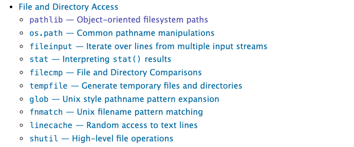
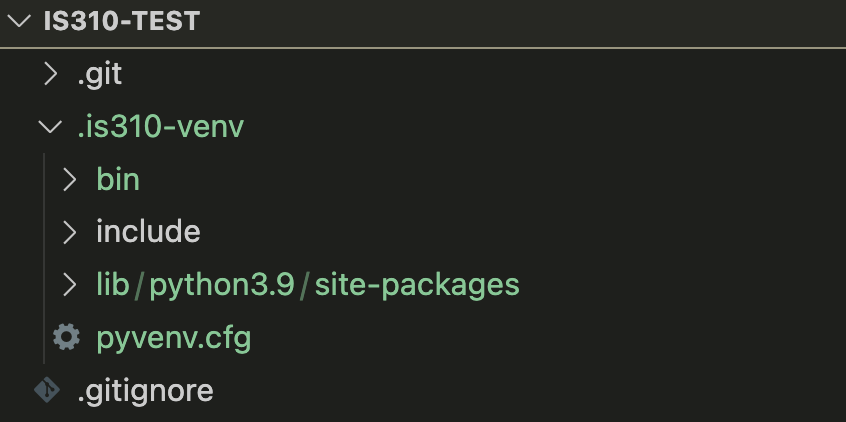
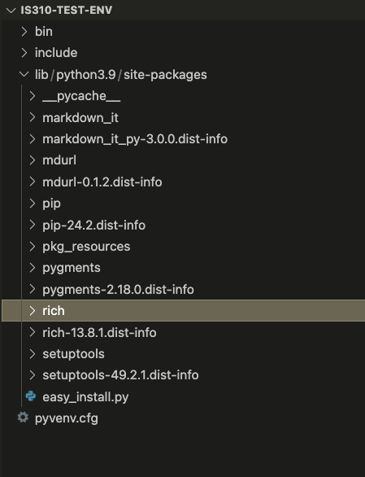
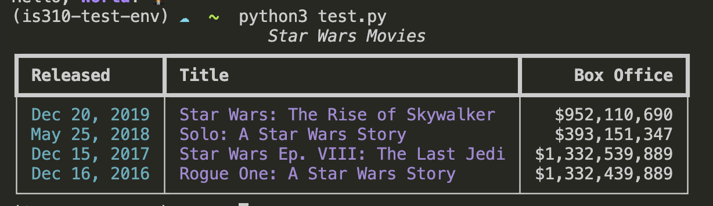
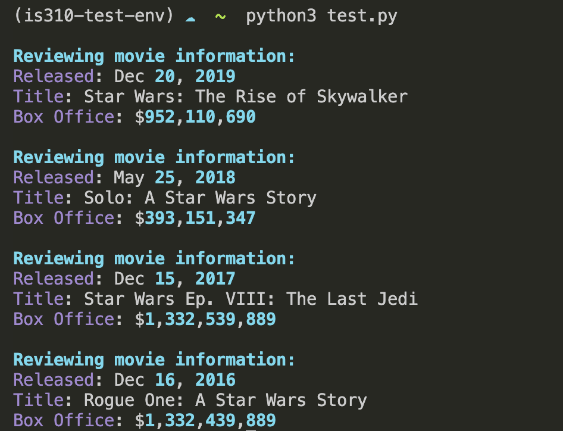

From Python Refresher To Complex Structures
Quick Review Time!
How Can I Start Writing Python Quickly?
How do we check our python version?
How do we open the interpreter?
How do we enter data into the interpreter?
What happens when you quit?
What Are Variables?
How do we write variables?
What happens if we assign new values to an existing variable?
What are best practices for writing variable names? What are reserved keywords?
What are Data Types?
When do we use quotations?
What are the differences between intergers and floats?
How do we check for true or false?
What Are Operators?
How can we add variables together or subtract them?
How can we check if variables contain the same values?
What Are Data Structures?
How do we write lists? What can they contain? . . .
How do we access values in a list? How can we get the last two values or the first two?
How do we combine lists?
How do we write dictionaries? What can they contain?
How do we add new values to a dictionary?
When should we use a list or a dictionary structure?
Why Scripts?
What is the value of using a script rather than the interpreter?
How do we create a Python script?
How do we run a Python script?
How can we output from a script?
What are Built-In Methods?
What are some of the built-in methods you have learned so far?
How can we check the type or length of a variable?
How can we shorten text with a built-in method? What is a delimiter and how can we use it to manipulate strings?
. . . How could we ask for user input with a built-in method?
What is Control Flow?
What happens if we call a variable before it is defined?
What is a for-loop? How do we write them in Python and why does indentation matter?
When we loop through a list, what does the variable represent and what is iteration?
What happens to that variable after the loop ends?
How would you loop through the keys and values of a dictionary?
What’s the .items() method?
What Are Functions?
What’s the syntax for creating a function?
What are arguments?
How do you pass data into a function?
Why would you use return in a function?
What happens to the returned value?
If you create a variable inside a function, can you use it outside?
What’s local scope vs global scope?
What Are Conditionals?
What’s the structure of a conditional statement?
What operators could you use to test conditions?
What’s the difference between = and ==?
. . . How could you test more than one condition?
What keywords let you combine conditions?
What if you have more than two possibilities?
When would you use elif instead of multiple if statements?
Check In?
Any questions??
Ideally this is just review but please speak up now before we start new content! Also optional homework for those newer to Python is available at the end of the Advanced Python lesson.
Complex Python
Advanced Data Structures
We’ve learned a lot about storing data in different structures. But what if we want to combine data and functions into one cohesive unit? What if we wanted to build upon this initial list to add more metadata and information about each movie, and also maybe even reuse this code in multiple scripts? Then we might want to consider rewriting the code into a class.
def check_movie_release(movie):
if movie['release_year'] < 2000:
print(f"{movie['name']} was released before 2000")
else:
print(f"{movie['name']} was released after 2000")
return movie['name']
recent_movies = []
favorite_movies =[
{
"name": "The Matrix I",
"release_year": 1999,
"sequels": ["The Matrix II", "The Matrix III", "The Matrix IV"]
},
{
"name": "Star Wars IV",
"release_year": 1977,
"sequels": ["Star Wars V", "Star Wars VI", "Star Wars VII", "Star Wars VIII", "Star Wars IX"],
"prequels": ["Star Wars I", "Star Wars II", "Star Wars III"]
}
]
for movie in favorite_movies:
result = check_movie_release(movie)
if result is not None:
recent_movies.append(result)
print(recent_movies)What is a Class?
While dictionaries are great for describing complex data within a single object, a class is really useful to encapsulate both data and functions in a single cohesive unit.
A class is a particular type of object. We can create (“instantiate”) an object of a class and store it as a variable. A variable therefore contains (technically, contains a reference to) an instance of a class.
We’ve already used a lot of built-in classes. Strings, lists, dictionaries are all classes. We can have Python tell us what kind of class it is using the built-in function type().
The Simplest Class
This class does nothing when instantiated, but it shows the basic syntax.
A Simple Movie Class
The __init__ method runs when you create an instance. self represents the instance itself. Self references the class instance that is created when you call a class, which is why self is the first argument to any function defined in a class. You can read more about class scope here.{target=“_blank”}
Adding Methods
Methods are functions inside a class. They operate on the instance’s data.
A More Complex Class
Initialize attributes as empty or None to structure your data.
Class Attributes vs Methods
Attributes: Data stored in the class (like self.movie_name)
Methods: Functions that operate on that data (like add_directors())
Adding More Functionality
So what’s going in this code block?
class Movie:
"""Contains methods for data about a movie
Methods:
--------
add_directors
add_release_year
calculate_age
"""
def __init__(self, name):
self.movie_name = name
self.directors = []
self.release_year = None
self.age = 0
self.sequels = []
self.prequels = []
def add_directors(self, directors):
"""Adds a list of directors of the movie
Method argument:
-----------------
directors(list) -- A list of people who director the movie
"""
if isinstance(directors, list) is False:
directors = [directors]
self.directors.extend(directors)
def add_release_year(self, year):
"""Adds the release year of the movie
Method argument:
-----------------
year(integer or string) -- A year the movie was released
"""
self.release_year = int(year)
def add_sequels(self, sequels):
"""Adds a list of sequels to the movie
Method argument:
-----------------
sequels(list) -- A list of sequels to the movie
"""
if isinstance(sequels, list) is False:
sequels = [sequels]
self.sequels.extend(sequels)
def add_prequels(self, prequels):
"""Adds a list of prequels to the movie
Method argument:
-----------------
prequels(list) -- A list of prequels to the movie
"""
if isinstance(prequels, list) is False:
prequels = [prequels]
self.prequels.extend(prequels)
def calculate_movie_age(self):
"""Calculates the age of the movie
"""
self.age = 2024 - self.release_year
a_movie = Movie("The Matrix I")
a_movie.add_directors(["Lana Wachowski", "Lilly Wachowski"])
a_movie.add_release_year(1999)
a_movie.add_sequels(["The Matrix II", "The Matrix III", "The Matrix IV"])
a_movie.calculate_movie_age()
print(a_movie.age)
print(a_movie.add_directors.__doc__) # To view the docstring for the methodAdding More Methods
What if we wanted to add a method for printing out an entire movie’s information? What is this code doing and how can we call this method?
Adding More Classes
What if we wanted to store prequels and sequels as instances of our Movie Class? What is this code doing exactly?
class Movie:
"""Contains methods for data about a movie
Methods:
--------
add_directors
add_release_year
calculate_age
"""
def __init__(self, name, release_year=None):
self.movie_name = name
self.directors = []
self.release_year = release_year
self.age = 0
self.sequels = []
self.prequels = []
def add_directors(self, directors):
"""Adds a list of directors of the movie
Method argument:
-----------------
directors(list) -- A list of people who director the movie
"""
if isinstance(directors, list) is False:
directors = [directors]
self.directors.extend(directors)
def add_release_year(self, year):
"""Adds the release year of the movie
Method argument:
-----------------
year(integer or string) -- A year the movie was released
"""
self.release_year = int(year)
def calculate_movie_age(self):
"""Calculates the age of the movie
"""
self.age = 2024 - self.release_year
def add_sequel(self, sequel, release_year):
"""Adds a sequel to the movie
Method argument:
-----------------
sequel(string) -- The name of the sequel
release_year(integer) -- The release year of the sequel
"""
sequel_movie = Movie(sequel, release_year)
self.sequels.append(sequel_movie)
def add_prequel(self, prequel, release_year):
"""Adds a prequel to the movie
Method argument:
-----------------
prequel(string) -- The name of the prequel
release_year(integer) -- The release year of the prequel
"""
prequel_movie = Movie(prequel, release_year)
self.prequels.append(prequel_movie)
def get_movie_info(self):
"""Prints out the movie's information
"""
for key, value in self.__dict__.items():
if key in ['sequels', 'prequels']:
print(f"{key}: {[movie.movie_name for movie in value]}")
else:
print(f"{key}: {value}")
def get_release_year(movie):
"""Returns the release year of the movie"""
return movie.release_year
def calculate_movie_order(self):
"""Calculates the order of movies based on release year
"""
all_movies = [self] + self.sequels + self.prequels
all_movies.sort(key=get_release_year)
return [movie.movie_name for movie in all_movies]
a_movie = Movie("The Matrix I")
a_movie.add_directors(["Lana Wachowski", "Lilly Wachowski"])
a_movie.add_release_year(1999)
a_movie.calculate_movie_age()
a_movie.add_sequel("The Matrix II", 2003)
a_movie.add_sequel("The Matrix III", 2003)
a_movie.add_sequel("The Matrix IV", 2021)
a_movie.add_prequel("The Matrix 0", 1998)
a_movie.get_movie_info()
print(a_movie.calculate_movie_order())Quick Exercise for Practice (Optional But Recommended)
- Try copying the
Movieclass into yourfirst_script.pyand then create a new instance of the class. Then try adding a sequel and prequel to the movie and then printing out the movie’s information. Remember that if you’re creating a new movie, you’ll need to create a new variable to save the new instance of theMovieclass and then add the directors and release year to the movie. - Try adding a function to the
Movieclass that saves their rating. Then try adding a rating to the movie and printing out the movie’s information.
Inline Comments
Use # to comment a single line.
Block Comments (Docstrings)
Documentation
In addition to comments, the other main resource for understanding how to use a class or function is the documentation. The documentation is a set of instructions that explains how to use a class or function.
This documentation explains how to define a class, how to create an instance of a class, and how to use methods in a class. It also explains how to use inheritance, which is a way to create a new class that inherits the attributes and methods of an existing class.
Learning to read documentation is a critical skill, so would highly recommend taking a look at the documentation when it is available.
Python Libraries & Imports
So you’re probably wondering when to use classes? Mostly we won’t be delving into code complicated enough to require to write your own classes, but you will be using lots of code that is based on this pattern. That’s because the class is the primary way that Python organizes its standard library and the wider ecosystem of external libraries.
Let’s dig into the Python documentation to understand more!
The Standard Library

The Python Standard Library contains modules built into Python.
PathLib
Let’s scroll down to the Pathlib module.

Pathlib
Now click on the link to the pathlib module.
PathLib Methods

Pathlib Methods
First take a look at the source code! Notice how it’s organized, and try and find the documentation for the class Path (hint use control F).
Let’s take a look at the methods in the class Path https://docs.python.org/3/library/pathlib.html#methods. How would we would print out the current working directory using pathlib?
Importing Libraries
Let’s try importing in Pathlib into our script.
Aliasing Imports
Now you can use pl.Path() instead of pathlib.Path().
Using pathlib
So now that we’ve explored ways to import pathlib, let’s try using this module. We’ll start by using pathlib to print out the current working directory.
File Input and Output
But pathlib is useful not just for printing out working directories, it can also let us load in files.
Reading in Data
Let’s try it out with Pathlib by passing in one of the datasets from the Responsible Datasets in Context Project that we have been reviewing each week. You can use any of the datasets, but I’m selecting the one by Os Keyes and Melanie Walsh. “U.S. National Park Visit Data (1979-2023) – Responsible Datasets in Context.” Responsible Datasets in Context, June 1, 2024. https://www.responsible-datasets-in-context.com/posts/np-data/.
Once you’ve downloaded the data, you should have a file called US-National-Parks_RecreationVisits_1979-2023.csv. Now let’s try using pathlib to read in the data.
Reading Files
Now if this code worked, it should show you the exact file path of your spreadsheet and then the type of the object, either <class 'pathlib.PosixPath'> or <class 'pathlib.WindowsPath'>. Not to get too complicated but this is because the Path class is a subclass of the PosixPath class (not really going to get into subclassing but think of it as building classes on top of one another - like Lego or Jenga).
Reading Files
We can also look at the methods built-in to the Path class. One in particular is useful for us read_text which reads in the contents of a file and returns it as a string. Read more about it here https://docs.python.org/3/library/pathlib.html#pathlib.Path.read_text and test it out in your script.
What does this do?
Beyond Pathlib: Using the open Function
The open Built-in Function
So far we’ve been using Pathlib to work with files, but there are number of libraries and even some methods built into Python for reading in and writing files.
For example we could use the open built-in function in Python.
File Input - Basic Approach
To open a file for reading (input), we just do:
Here, we use the open function to open a file in mode “r” (read). open returns a File Object that provides methods for reading and writing.
Using Path Objects with open
We could even just pass in our Path object to the open function:
At the end, we can close the file to save some memory, but Python will eventually close it automatically if we don’t.
The with Statement
Often, you’ll see file handling used with the with keyword:
This is functionally the same as our last example. The only difference is that the file is automatically closed at the end of the block.
File Output
File output is very similar. We just use mode w, which overwrites the file specified. We can also use x (which only works for new files) or a (which appends data at the end of the file).
| Character | Mode | Description |
|---|---|---|
r |
Read (default) | Open a file for read only |
w |
Write | Open a file for write only (overwrite) and will also create a new file if it doesn’t exist |
a |
Append | Open a file for write only (append) |
r+ |
Read+ | Write open a file for both reading and writing |
x |
Create | Create a new file |
Writing to a File Example
To understand file output, let’s try working with a file that doesn’t exist:
Once you run it, you should see a new file in your directory called new_text.txt, containing a list of numbers.
Type Conversion with write()
Here’s something tricky: i and i**2 are integers, but the file object expects a string. If we try f.write(i**2), we’ll get: TypeError: write() argument must be str, not int
To get around this, we can convert from int to string using str():
The newline character "\n" inserts a line break. Without it, all the numbers would be on the same line.
Practice: File I/O with Classes
- Try adding a function to your
Movieclass that saves the movie’s information to a file. - Try adding a function to your
Movieclass that reads in a file and sets the movie’s information.
Example: Save Movie Info
Here’s a function to save the movie’s information to a file:
def save_movie_info(self, file_name):
"""Saves the movie's information to a file
Method argument:
-----------------
file_name(string) -- The name of the file to save the movie's information to
"""
with open(file_name, "w") as f:
f.write(f"Movie Name: {self.movie_name}\n")
f.write(f"Directors: {', '.join(self.directors)}\n")
f.write(f"Release Year: {self.release_year}\n")
f.write(f"Age: {self.age}\n")
f.write(f"Sequels: {', '.join([sequel.movie_name for sequel in self.sequels])}\n")
f.write(f"Prequels: {', '.join([prequel.movie_name for prequel in self.prequels])}\n")Using Save Movie Info
Now you can call this function on your a_movie object:
a_movie = Movie("The Matrix I")
a_movie.add_directors(["Lana Wachowski", "Lilly Wachowski"])
a_movie.add_release_year(1999)
a_movie.add_sequel("The Matrix II", 2003)
a_movie.add_sequel("The Matrix III", 2003)
a_movie.add_sequel("The Matrix IV", 2021)
a_movie.add_prequel("The Matrix 0", 1998)
a_movie.calculate_movie_age()
a_movie.save_movie_info("movie_info.txt")Example: Read Movie Info
Here’s a function to read in a file and set the movie’s information:
def read_movie_info(self, file_name):
"""Reads in a file and sets the movie's information based on the file
Method argument:
-----------------
file_name(string) -- The name of the file to read the movie's information from
"""
with open(file_name, "r") as f:
lines = f.readlines()
self.movie_name = lines[0].split(": ")[1].strip()
self.directors = lines[1].split(": ")[1].strip().split(", ")
self.release_year = int(lines[2].split(": ")[1].strip())
self.age = int(lines[3].split(": ")[1].strip())
self.sequels = [Movie(sequel.strip()) for sequel in lines[4].split(": ")[1].strip().split(", ")]
self.prequels = [Movie(prequel.strip()) for prequel in lines[5].split(": ")[1].strip().split(", ")]Using Read Movie Info
Now you can call this function on your a_movie object:
Virtual Environments & Packages
What is a Virtual Environment?
We’ve learned to use libraries that come pre-installed with Python, but now we need to install additional libraries. Before we do, we need to create a virtual environment.
A virtual environment is a self-contained directory that contains a Python installation plus additional packages, isolated from the global Python installation.
Why Virtual Environments Matter
From the Python documentation:
“Python applications will often use packages and modules that don’t come as part of the standard library. Applications will sometimes need a specific version of a library, because the application may require that a particular bug has been fixed or the application may be written using an obsolete version of the library’s interface.
This means it may not be possible for one Python installation to meet the requirements of every application. If application A needs version 1.0 of a particular module but application B needs version 2.0, then the requirements are in conflict and installing either version 1.0 or 2.0 will leave one application unable to run.
The solution for this problem is to create a virtual environment, a self-contained directory tree that contains a Python installation for a particular version of Python, plus a number of additional packages.”
You can read more here about virtual environments.
Before We Begin: Check pip
Prior to installing our virtual environment, let’s make sure that you have the latest version of pip, which stands for “Python Installs Packages.”

install pip
Before We Begin: Check pip
If you get any errors, you can check if you have pip installed by running the following command in your terminal:
pip comes built-in to Python and is used to install external libraries. If you don’t have pip, visit https://pip.pypa.io/en/stable/installation/
venv
Now we’ll use the built-in Python virtual environment, called venv, which you can read more about here https://docs.python.org/3/library/venv.html. One thing to note is that there are LOTS of different ways to setup your virtual environment (which lots of people have very strong feelings about). I like this answer from Stack Overflow for giving an overview of the differing options https://stackoverflow.com/a/65854168/7437781.
Creating Virtual Environments
Now that we have a sense of what a virtual environment is, let’s start creating one. We’ll start by creating a virtual environment in VS Code and then we’ll move to the terminal.
Creating Virtual Environments in VS Code
Note
⚡️ This information has been adapted from “https://code.visualstudio.com/docs/python/environments”.
In VS Code, open the Command Palette:
- Mac:
⇧⌘P - Windows:
Ctrl+Shift+P
You can also access the Command Palette by clicking on the View menu and selecting Command Palette.
Once it is open, you should type Python: Create Environment and selecting it in the menu. You’ll see two options: Venv or Conda. You can choose either, but I would recommend using Venv since it is built into Python and is the most common way to create a virtual environment.

Selecting Python Version
Once you select Venv, you’ll be prompted to select the Python interpreter you want to use. You can choose the one that comes with Python, or you can select a different one if you have multiple versions of Python installed on your computer. Please make sure to not select a Python 2 interpreter, as Python 2 is no longer supported.

Create Environment Name
Locating Your Virtual Environment
Once you’ve created your virtual environment, you should see it in whatever folder you’ve opened in VS Code. If you do not open a folder and try to create a virtual environment, you will get an error saying that you need a “workspace” to create a virtual environment. You can create a workspace by opening a folder in VS Code.

Created Environment
Renaming Your Virtual Environment
If you’ve successfully created your virtual environment, you should see a .venv folder in your project directory. This is where your virtual environment is stored. You’ll notice in the image above I renamed my virtual environment to is310-env. You can do this by right-clicking on the .venv folder and selecting Rename Folder. You may need to reopen your VS Code window to see the changes.
Activating Your Virtual Environment

Once created, you should see a .venv folder in your project directory. Though remember that . folders and files are hidden so you might need to use the relevant command to show them.
You’ll notice that VS Code organizes the virtual environments by the type of environment and also if they are globally installed.
Activated Venv in VS Code

Virtual Environment Activated
Once you select the virtual environment you want to use, you should see that it is activated in the bottom left corner of your VS Code window.
Not Activated? Select Interpreter!
If you have not activated your virtual environment, you’ll notice that the status bar will say Select Python Interpreter and if you click it you’ll be able to select the virtual environment you want to use.

Select Python Interpreter
Final Check
Now when you go to open a new terminal in VS Code, you should see that your virtual environment is activated by the (.venv) in your terminal. You can also see that the name of your virtual environment is in the terminal prompt so in our case it would be (is310-env).

Activate Virtual Environment
Creating Virtual Environments in Terminal (Optional)
To be honest, VS Code has gotten very good at creating virtual environments and I would recommend using that method. However, if you are interested in creating a virtual environment in the terminal, you can follow the instructions below. I’m mostly including this because I still work this way, so you’ll see me doing this in class.
.virtualenvs
To create a virtual environment in the terminal, we’ll start by opening our terminal and then navigating to the directory where we want to create our virtual environment. I would recommend making the virtual environment in your project directory, though another popular choice is to make a directory in your home directory to store all your virtual environments. You can do that with the commands below:
Creating Virtual Environments in Terminal
Now that we are in the directory where we want to create our virtual environment (whether that’s is310-coding-assignments or .virtualenvs), we can create it by running the following command:
Activating Virtual Environments
Then activate it with:
If you are getting errors in PowerShell, you may need to change your execution policy. You can do this by running the following command:
Deactivating Virtual Environments
To deactivate your virtual environment in the terminal:
Your virtual environment will no longer be in the terminal prompt.
This will deactivate your virtual environment and you’ll see that the name of your virtual environment is no longer in your terminal prompt. You can also deactivate your virtual environment in VS Code by selecting New Terminal under the Terminal menu.
Adding to .gitignore
Virtual environments are specific to your computer. Don’t commit them to git.
Add this to your .gitignore:
Or if you accidentally committed it:
Installing Libraries with pip in venv
Now that we have our virtual environment created and activated in VS Code, we can start to try installing external Python libraries.
Today, we will try installing the Python package Rich by running the following command:
Remember: Always do this with your virtual environment activated!
Testing the Installation
To verify the installation worked:
Or check all installed libraries:
site-packages
You can also look in your virtual environment directory and see if there is a site-packages directory. This is where all the libraries you install with pip are stored. You can see that the Rich library is installed in the site-packages directory.

Rich Installed
The Rich Library
Rich is Python Library built originally by Will McGugan to add rich text and beautiful formatting in the terminal. We can see from the GitHub repository https://github.com/Textualize/rich that it is a very popular library with almost 50,000 stars and used by almost 300,000 repositories on GitHub. We can see that there is currently 256 contributors and that the project started in 2019.

Rich Features

We can start to get a sense of what the library can do by looking at the features listed on the GitHub repository but we can also read the documentation for the library to get a better sense of what it can do https://rich.readthedocs.io/en/stable/introduction.html.
Rich Documentation
This documentation is very detailed, but we can start with the Quickstart guidelines https://rich.readthedocs.io/en/stable/introduction.html#quick-start to get a sense of how to use the library.
From the guidelines we can see how to import the library into our Python script. In your is310-coding-assignments directory, create a new folder called python-libraries and create a new file called rich_example.py. In this file, add the following code:
Rich Outputs
Run it:
You should see the following output in your terminal:

Notice that the word world is in bold and magenta and that there is a vampire emoji at the end of the sentence. This is the power of the Rich library.
Rich Tables
Rich has powerful classes like Console and Table for formatting:
from rich.console import Console
from rich.table import Table
console = Console()
table = Table(title="Star Wars Movies")
table.add_column("Released", style="cyan", no_wrap=True)
table.add_column("Title", style="magenta")
table.add_column("Box Office", justify="right")
table.add_row("Dec 20, 2019", "Star Wars: The Rise of Skywalker", "$952,110,690")
table.add_row("May 25, 2018", "Solo: A Star Wars Story", "$393,151,347")
table.add_row("Dec 15, 2017", "Star Wars Ep. VIII: The Last Jedi", "$1,332,539,889")
table.add_row("Dec 16, 2016", "Rogue One: A Star Wars Story", "$1,332,439,889")
console.print(table)And you should see the following output in your terminal:

Rich Classes
You’ll notice this documentation is somewhat difficult to read, but it does show us the different methods and attributes that are available to us in the Console class. We can also click the small green source button to see the source code for the class https://rich.readthedocs.io/en/stable/_modules/rich/console.html#Console.
Rich with Data Structures
You can use Rich to format data from lists and dictionaries:
from rich.console import Console
from rich.table import Table
# Create a Console instance to print formatted text
console = Console()
# Initial movie data stored in a list of dictionaries
movies = [
{
"Released": "Dec 20, 2019",
"Title": "Star Wars: The Rise of Skywalker",
"Box Office": "$952,110,690"
},
{
"Released": "May 25, 2018",
"Title": "Solo: A Star Wars Story",
"Box Office": "$393,151,347"
},
{
"Released": "Dec 15, 2017",
"Title": "Star Wars Ep. VIII: The Last Jedi",
"Box Office": "$1,332,539,889"
},
{
"Released": "Dec 16, 2016",
"Title": "Rogue One: A Star Wars Story",
"Box Office": "$1,332,439,889"
}
]
# Loop through the list of movies
for movie in movies:
console.print("\n[bold cyan]Reviewing movie information:[/bold cyan]")
for field, value in movie.items():
console.print(f"[magenta]{field}[/magenta]: {value}")
Homework: Command Line Data Curation
Now it’s time to put everything together!
Homework instructions available here
Comments and Documentation
You’ll notice in our
Movieclass that we’ve added a lot of comments. Comments are a way to add human-readable text to your code that explains what the code is doing. Comments are not executed by the Python interpreter, so they don’t affect the code’s behavior. They are just there to help you and other people understand the code. I highly recommend adding comments to your code, especially if you’re working on a team or if you’re writing code that you might not look at for a while.